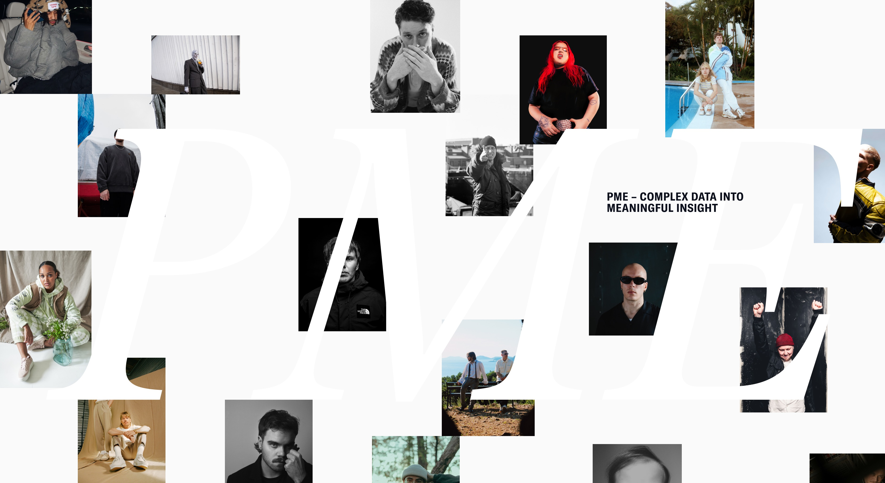
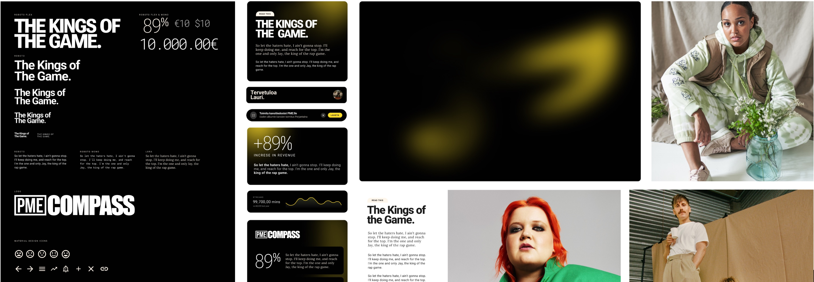
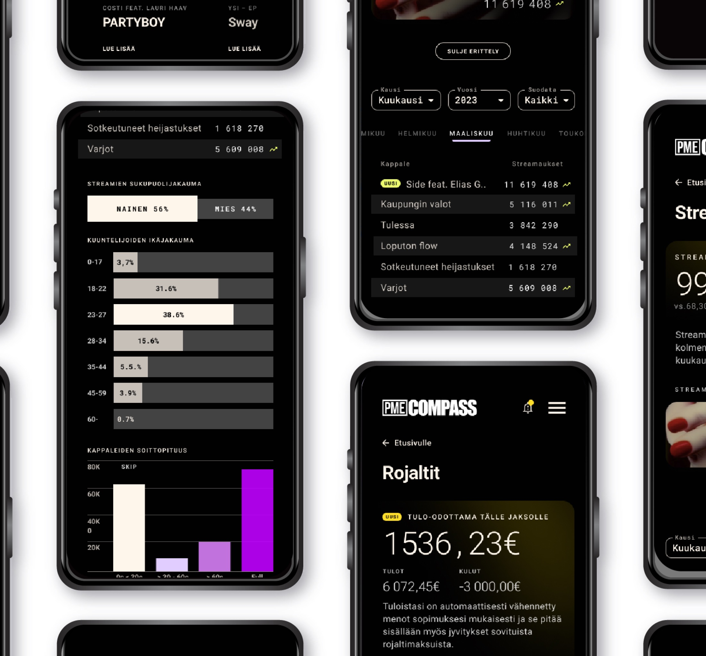
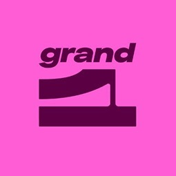

PME Compass is a digital platform created by Hellon and PME Records to reshape how artists access and understand their career data.
In today’s music industry, information on royalties, streams, live performance revenues, and fan engagement is fragmented across multiple systems, often accessible only to major players. PME Compass aims to democratize this data, giving artists the same clarity and control over their careers as record labels have long enjoyed.
The project combines strategic design, deep artist research, and data-driven service development to create a transparent, intuitive ecosystem where creativity and insight coexist. PME Compass helps artists make informed decisions without compromising their artistic integrity, while enabling PME to support its roster through data-led mentoring and long-term career planning.
At its core, PME Compass represents a shift toward fairness, transparency, and empowerment in the music industry. Turning complex data into meaningful insight for those who create the art itself.
The work spanned from early ecosystem mapping to prototyping and testing, combining research, co-creation, and strategic design.
Based on a co-creation session where we explored three potential directions for the visual identity and tone of voice of the new service, I created the initial conceptual drafts for the logo, typography, colour palette, and imagery style for the upcoming PME Compass.


Two different visual prototypes to be shown in the artist and internal stakeholder interviews.
Together with the team we planned two different prototypes based on 1st service vision drafts which were intended for Artist and Admin, i.e. PME personnel.
The two visual prototypes were used more as inspiration and communication of the service vision and were shown for the participant after the interview.
The interviews and insights from this phase culminated in the creation of detailed artist profiles and their primary value drivers.
They became the guiding framework for the platform's conceptual development and eventually also guiding the continued development and choices of prioritisation.
Identified artist profiles and their value drivers proved to be valuable also later on in more general strategic planning of the independent record label.
Create a long-term perspective. Provide comprehensive tools for understanding the music economy
Create monthly or yearly summary views to gain a big-picture perspective. Provide actionable suggestions based on the data.
Focus on visuals rather than numbers. Nudge the artist to explore data and understand the benefits of tracking it.
Focus on functionalities that support the artist's team. Establish consistent methods for curating and communicating information to the artist.
From Vision to Reality with Human-Centered Design
PME COMPASS provides artists with an intuitive way to gain insights into the performance of their music and monitor their revenue streams—all without disrupting their artistic and creative integrity.
PME COMPASS offers the record label an efficient tool for tracking and supporting artists’ careers, while also aiding in the planning and advancement of the label’s business operations.
Feedback scores from artists and employees. N=18
Compass has transformed how I understand my career. I finally have a clear view of my income, expenses, and streams, all in my phone—it's like having a personal manager for my own data.
Jare Brand, Artist, JVG

Grand One 2025
2 x Honourable mentions
Best Digital Service
Best Service Design
As a Finnish innovation, Compass demonstrated potential for broader use and international expansion, representing a significant step forward for independent players in the music technology space.
Teemu Laitinen,
CEO, PME Records
Compass has streamlined everything for us. With all the artist data centralized, I can easily track their progress, plan releases, and provide personalized support—it’s a transformative solution for our workflow.
Marcus Palmu,
Product Owner,
PME Records